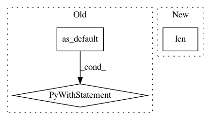

c96af58e6ab2f85626e51a331e8479da49329f0e,deepchem/models/tensorflow_models/__init__.py,TensorflowClassifier,predict_proba_on_batch,#TensorflowClassifier#Any#Any#,654
Before Change
X = pad_features(self.batch_size, X)
if not self._restored_model:
self.restore()
with self.eval_graph.graph.as_default():
// run eval data through the model
n_tasks = self.n_tasks
with self._get_shared_session(train=False).as_default():
feed_dict = self.construct_feed_dict(X)
data = self._get_shared_session(train=False).run(
self.eval_graph.output, feed_dict=feed_dict)
batch_outputs = np.asarray(data[:n_tasks], dtype=float)
// reshape to batch_size x n_tasks x ...
if batch_outputs.ndim == 3:
batch_outputs = batch_outputs.transpose((1, 0, 2))
elif batch_outputs.ndim == 2:
batch_outputs = batch_outputs.transpose((1, 0))
else:
raise ValueError(
"Unrecognized rank combination for output: %s " %
(batch_outputs.shape,))
// Note that softmax is already applied in construct_grpah
outputs = batch_outputs
return np.copy(outputs)
class TensorflowRegressor(TensorflowGraphModel):
Regression model.
After Change
return loss
def fit(self, dataset, nb_epoch=10, max_checkpoints_to_keep=5,
log_every_N_batches=50, **kwargs):
Fit the model.
In pattern: SUPERPATTERN
Frequency: 3
Non-data size: 3
Instances
Project Name: deepchem/deepchem
Commit Name: c96af58e6ab2f85626e51a331e8479da49329f0e
Time: 2017-01-18
Author: joegomes@stanford.edu
File Name: deepchem/models/tensorflow_models/__init__.py
Class Name: TensorflowClassifier
Method Name: predict_proba_on_batch
Project Name: deepchem/deepchem
Commit Name: ef3c40a4542966e2dac08cc51710ddedc31fd2d9
Time: 2019-06-10
Author: peastman@stanford.edu
File Name: deepchem/models/tensorgraph/progressive_multitask.py
Class Name: ProgressiveMultitaskRegressor
Method Name: add_adapter
Project Name: deepchem/deepchem
Commit Name: 1330ea3102315bd79c9c6efdbd8818c8e2a3cb8f
Time: 2019-07-09
Author: peastman@stanford.edu
File Name: deepchem/metalearning/maml.py
Class Name: MAML
Method Name: fit